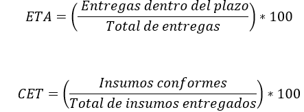

|
PSC
008|Gestión de proveedores
|
Ver.
000
|
|
|
Creado
por EGC | Aprobado por CEO
|
Fecha:
01.12.2024
|
Contenido
1.- Objetivo del Proceso................................................................................................................................................
2.- Alcance del Proceso................................................................................................................................................
3.- Matriz del Proceso...................................................................................................................................................
3.- Recursos del proceso..............................................................................................................................................
3.1.- Recursos.............................................................................................................................................................
3.2.- Responsables......................................................................................................................................................
4.- Seguimiento...........................................................................................................................................................
4.1 Metodología...........................................................................................................................................................
4.2.- Indicadores..........................................................................................................................................................
5.- Análisis y evaluación de riesgos del proceso.............................................................................................................
6.- Análisis y evaluación de oportunidades del proceso...................................................................................................
8.- Historial de Versiones.............................................................................................................................................
1.-
Objetivo del Proceso
Garantizar que los proveedores cumplan con los requisitos establecidos
por la organización, asegurando la calidad, disponibilidad y confiabilidad
de los bienes y servicios suministrados, y fomentando relaciones de mutuo
beneficio.
2.-
Alcance del Proceso
El proceso abarca desde la identificación, evaluación y
selección de proveedores, hasta su monitoreo y evaluación
continua, asegurando el cumplimiento de los estándares de calidad
y los términos contractuales.
3.- Matriz del Proceso
| ENTRADAS | PROCEDIMIENTOS (actividades) | SALIDAS |
|
Requerimientos
de bienes y servicios.
|
Identificación
de necesidades y especificaciones técnicas.
|
Lista
de especificaciones.
|
|
Propuestas
de proveedores potenciales.
|
Evaluación
inicial basada en criterios de calidad, costo y capacidad.
|
Lista
de proveedores aprobados.
|
|
Contratos
y acuerdos previos.
|
Verificación
de cumplimiento de términos establecidos.
|
Registro
de cumplimiento contractual.
|
| Indicadores de desempeño de proveedores. | Monitoreo y análisis del desempeño de los proveedores seleccionados. | Informe de evaluación de proveedores. |
|
Auditorías
y revisiones externas.
|
Identificación
de no conformidades y áreas de mejora en la cadena de suministro.
|
Plan
de acciones correctivas.
|
3.-
Recursos del proceso
3.1.- Recursos
Para este proceso de Gestión de proveedores se requieren:
- Humanos: Personal encargado de compras, logística y calidad.
- Financieros: Presupuesto asignado para la adquisición de bienes y servicios.
- Tecnológicos: Herramientas de gestión de proveedores (SRM) y sistemas de monitoreo.
- Información:
Especificaciones de bienes y servicios, historiales de proveedores y
resultados de evaluaciones.
.
3.2.- Responsables - Departamento de compras o logística
- Responsable del SGC
- Líderes
de áreas operativas.
4.- Seguimiento
4.1 Metodología
El seguimiento del proceso de Gestión de proveedores se realiza mediante:
- Aplicación de auditorías o evaluaciones periódicas a proveedores.
- Revisión de indicadores de desempeño y cumplimiento contractual.
- Implementación de encuestas de satisfacción interna sobre los bienes y servicios recibidos.
Gestión de
acciones correctivas o preventivas en caso de incumplimientos.
4.2.-
Indicadores
% de entregas a tiempo.
% de cumplimiento de especificaciones técnicas.
(Mide el desempeño del Proceso 008)

Justificación:
Un nivel del 95% en entregas a tiempo y 98% en cumplimiento de especificaciones
asegura un suministro confiable y de calidad.
Fuente de Datos: Informes de recepción de bienes, registros
de inspección, contratos.
Frecuencia de Evaluación: Trimestral, con revisión
anual por la Alta Dirección.
Plan de Acción: Si los indicadores están fuera de
rango, se desarrollarán estrategias de mejora o reemplazo de proveedores.
5.-
Análisis y evaluación de riesgos del proceso
La evaluación de riesgos en el proceso de Gestión de proveedores
incluye:
- Falta de Proveedores Calificados: Limitación de opciones para suministros específicos.
- Incumplimientos Contractuales: Retrasos o deficiencias en las entregas.
- Dependencia de
Proveedores Críticos: Riesgo de interrupción por falta
de alternativas.
6.- Análisis y evaluación de oportunidades del proceso
1. Desarrollo de Proveedores Locales: Reducción de costos logísticos y mejora en tiempos de entrega.
2. Colaboración Estratégica: Alianzas para mejorar la calidad y la eficiencia de los suministros.
3. Automatización de Gestión: Uso de plataformas tecnológicas para monitorear y evaluar proveedores en tiempo real.
4. Capacitación de Proveedores: Programas de formación para alinear estándares de calidad con los requisitos organizacionales.
7.- Documentación de Referencia
- Criterios de evaluación y selección de proveedores.
- Contratos y acuerdos con proveedores.
- Informes de desempeño de proveedores.
- Registros de no conformidades y acciones correctivas.
| Versión | Fecha | Asiento | Aprueba |
| 000 | 01.12.2025 | Original | CEO |